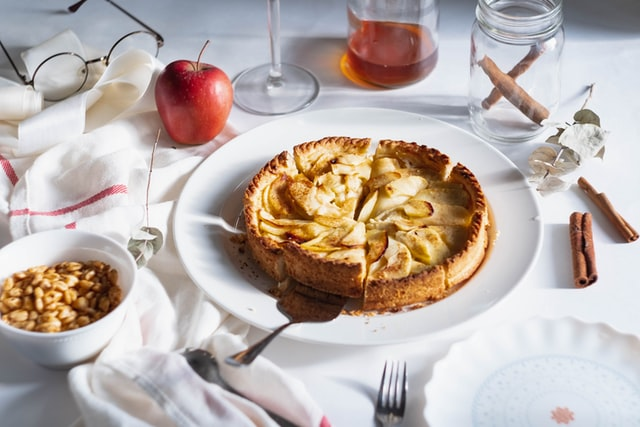

Torta de Maçã

Descrição
Uma torta de maçã, no Brasil, ou tarte de maçã, em Portugal, é um doce
cozido no forno recheada de maçãs. Na região Sul do Brasil, existe a cuca,
de origem alemã, também com recheio de maçãs, mas também com outras frutas
tal como goiaba, figo, pêssego e outras frutas ou a mistura dessas. É um
doce comum na culinária dos Estados Unidos, assim como em outros países.
Ingredientes
Massa
- 1 e 1/2 pacotes de bolacha maisena
- 120 g de margarina sem sal
Doce de Maçã
- 11 maçãs gala sem casca e raladas
- 9 colheres (sopa) de açúcar refinado
- 2 colheres (sopa) de canela
- 1 colher (sopa) suco de limão
Creme
- 1 lata de leite condensado
- 1 lata de creme de leite
- 4 gemas
- baunilha a gosto
Modo de Preparo
-
Triture a bolacha no processador (pode ser no liquidificador) e adicione
a margarina até obter uma farofa úmida e homogênea.
- Forre a base de uma forma de fundo removível. Reserve.
-
Leve ao fogo médio: a maçã ralada, o açúcar e o limão e cozinhe até a a
água secar.
-
Acrescente a canela e deixe esfriar e após isso espalhe sobre a base de
biscoitos. Reserve.
-
Leve ao fogo em uma panela: o leite condensado, as gemas e a baunilha e
mexa até engrossar. Desligue o fogo e acrescente o creme de leite.
- Despeje por cima do doce de maçã e polvilhe com canela.
-
Leve a torta para assar em forno preaquecido a 180°C por cerca de 20
minutos.
- Sirva gelada.
voltar